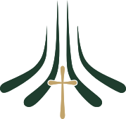

Domingo en la mañana
Oración · 8:30 a.m. Escuela dominical · 9:00 a.m. Salón de la amistad · 10:00 a.m.

Iglesia Bíblica Sendas de Gracia Planifica tu visitaIglesia bíblica en misión
Para que conozcan a Dios y le sirvan en adoración, ministerio y evangelismo.
Bienvenido
Nuestra misión es impartir continuamente la verdad bíblica al pueblo de Dios para que lo conozcan y lo sirvan en adoración, ministerio y evangelismo.
Reuniones
Oración · 8:30 a.m. Escuela dominical · 9:00 a.m. Salón de la amistad · 10:00 a.m.
Domingos · 10:30 a.m. a 12:30 p.m. · Adoración congregacional, oración y predicación expositiva.
Último miércoles de cada mes · 6:30 p.m. a 8:00 p.m. · Oración como iglesia.
Distintivos
Procuramos que los sermones nazcan directamente de las Escrituras, explicando con fidelidad el texto y su aplicación.
La membresía expresa nuestro pacto de caminar juntos en obediencia, amor, servicio y cuidado pastoral.
Acompañamos a los creyentes desde las Sagradas Escrituras para crecer en doctrina, carácter y obediencia.
Deseamos edificar familias que crezcan bajo el modelo establecido por Dios en Su Palabra.
Practicamos la disciplina como una expresión de amor que busca restauración, pureza y fidelidad al evangelio.
Afirmamos el cuidado de la iglesia por hombres llamados y capacitados para pastorear bajo la autoridad de Cristo.
Predicaciones
El archivo se actualiza desde el canal actual de la iglesia para mostrar primero el último mensaje publicado.
Abrir predicacionesMinisterios
Somos una familia de fe que acoge, enseña y sirve, con el deseo genuino de vivir para la gloria de Dios. Cada espacio existe para formar discípulos y cuidar el evangelio.
Planifica tu visita
Nos reunimos en Cl. 30 Sur #43a - 62, Zona 2, Envigado, Antioquia. Serás recibido con claridad, reverencia y disposición para acompañarte.